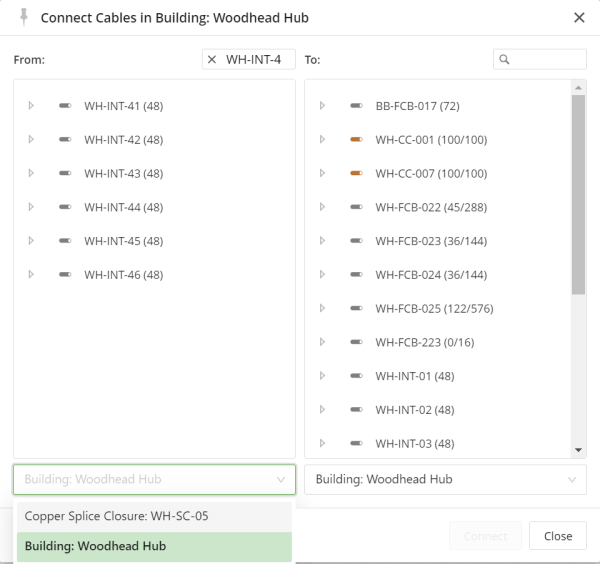
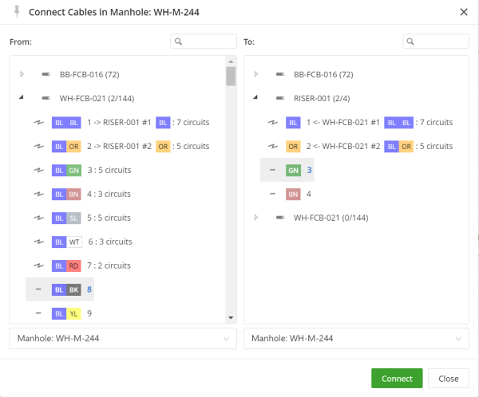
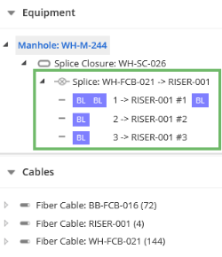

To connect two cables:
Right-click the equipment, and then click Connect Cables.
The Connect Cables dialog appears listing the cables that are present in the structure.

Figure: Connect Cables selection dialog
To connect the cables:

Figure: Connect Cables dialog
In the To column, click the strands to connect to.
The new splice appears as an entry in the Equipment tree. You can also view connections from the Cable tree.

Figure: Splicing
Notes: